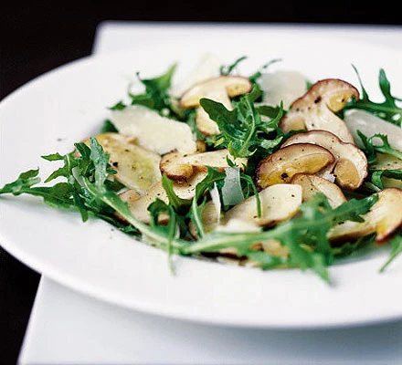

Cep, Rocket & Parmesan Salad

This delicious, easy-to-make mushroom salad looks really impressive at dinner parties.
Ingredients
- 200g small firm ceps
- 2 tbsp lemon juice
- 2 tsp water
- 75ml extra-virgin olive oil
- 50g wild rocket
- 100g parmesan (or vegetarian alternative), shaved or grated
Method
- Carefully wipe ceps with damp kitchen paper. Finely slice, then lay them flat on a large plate. Mix lemon juice with water and seasoning, then whisk in extra virgin olive oil. Brush about half of this dressing over mushrooms with a pastry brush. Sprinkle with sea salt and grind over a little black pepper. Marinate for about 10 mins. Toss wild rocket and Parmesan shavings with the remaining dressing, season. Divide between four plates, then gently place ceps over the top.